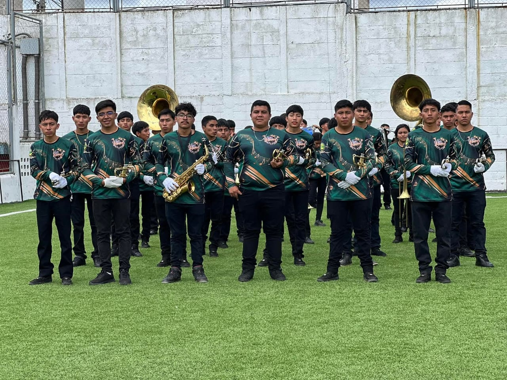
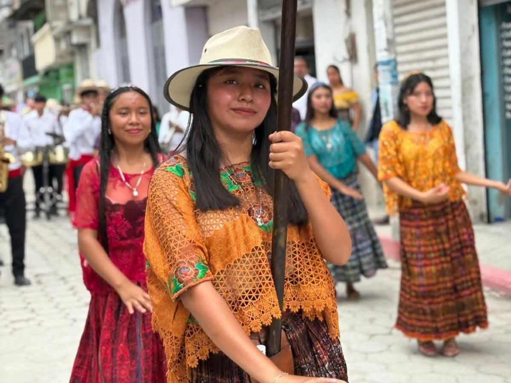
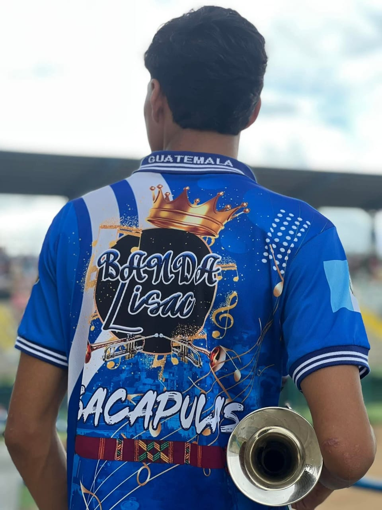

Banda



La banda fue fundada en el año 2008, gracias a la gestión del director quien en vida fue el Profesor Onofre Felipe Gómez y alumnado en general, dirigido por Rolando Aceytuno, obteniendo participacion en distintos lugares como Cunén, Uspantán, Nebaj, Santa Cruz del Quiché, Aguacatán, Huehuetenango, Totonicapán, Quetzaltenango y Antigua Guatemala, obteniendo primer, segundo y tercer lugar en sus distintas participaciones, actualmente cuenta con 55 integrantes.